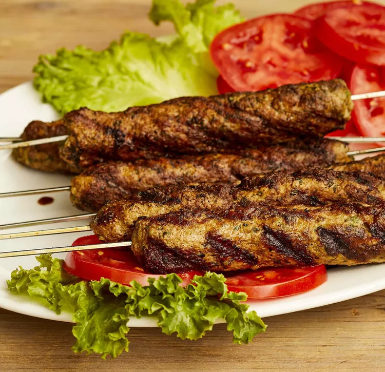

Indian-Style Seekh Kebab

Description
These lamb seekh kebabs are a spicy and extremely flavorful recipe that will surely be a hit at any outdoor party.
They are seasoned with green chili paste, spices, mint, cilantro, and ginger. Delicious with a salad, mint chutney, and naan.
Ingredients
- 2 pounds lean ground lamb
- 2 medium onions, finely chopped
- Half cup fresh mint leaves, finely chopped
- Half cup cilantro, finely chopped
- 1 tablespoon ginger paste
- 1 tablespoon green chile paste
- 2 teaspoons ground cumin
- 2 teaspoons ground coriander
- 2 teaspoons paprika
- 2 teaspoons salt
- 1 teaspoon cayenne pepper
- 8 skewers
- Quarter cup vegetable oil for brushing, or as needed
Home